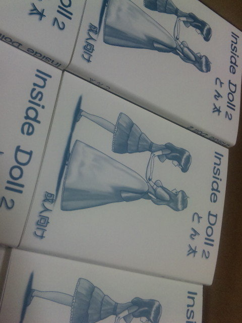

|
こちらのページでは、当サイトで作成した同人小説第二弾［InsideDoll2］についてご紹介します。
同人小説「InsideDoll2」は2010年03月28日に開催された「あしピタっ！！４（Ｆｉｎａｌ）」と言うイベントで販売を開始した同人小説です。
2017年01月01日時点で、商品在庫はありません。
これで、委託先、手持ち在庫共に、完売となっています。
お買い上げ頂いた皆様には、重ねてお礼申し上げます。
イベント、および手渡し価格が1部800円。委託販売価格は各店舗とも1部1200円（委託手数料を含んだ価格）です。
内容は「あしピタっ！！４（Ｆｉｎａｌ）」と言うイベントの趣旨に合わせて、タイツを題材にしている前作からの続き物を１話と、完全新作を１話の、合計２話を掲載しています。
内容については、以下をご参照下さい。
前作の続き物「足モデルも楽じゃない２」
前作の続き物は、作品をご存知の方には分ると思いますが、あのエピソードの翌日以降の話です。
前作を読んだ事が無い人でも、楽しんでいただける内容になっていますし、前作を知っている人には、今回のエピソードのきっかけとなる部分で前作の話が絡みますので、よりスムーズに話に入れると思います。
詳しいことはネタバレになるのであまり書けませんが、前作でタイツのモデルとしてイベント会場でお仕事をしていた着ぐるみと一緒に仕事をする、ちょっとフェチなモデルの女の子によって、着ぐるみモデルが色々と悩ましい立場に追い込まれてしまうようです。
モデルをしているその女の子は、着ぐるみさんよりちょっとだけ体型が小柄。そんなモデルさんが、巧妙に悪戯して、その子が穿いていたタイツを穿かされる事になってしまったとしたら、着ぐるみの中は大変な世界になる気がしませんか？
もちろんこれはあくまでも作中のエピソードの一つで、他にも色々大変なことが待っているようです。
完全新作「瑞穂と桜」
完全新作については、ホビー２１で行われている着ぐるみの小規模なショーのエピソードです。
お金持ちのお嬢様の着ぐるみの女の子が、友達のやはりお嬢様の着ぐるみの女の子を家に招いて、お部屋の中で仲良くお人形遊びをしながら、ホビー２１で売っているそのお人形をプレゼンテーションする、と言う設定です。
ゴージャスに毛足の長いフカフカの絨毯が引かれた部屋のセットの中で、女の子２人がお人形遊びを楽しむ様をお楽しみ下さい。
と言っても、もちろん、ただ商品を宣伝するだけで終わる話ではありません。
これもネタバレになるとつまらないので、少しだけ面白い話を書いてみますね。
一つのポイントはフカフカの絨毯、と言う所です。
そこに女の子座りする着ぐるみの女の子。下に毛足の長いフカフカ絨毯、ですよ？ 絨毯の長い毛先が、その上に座っている女の子の何処かに凄くソフトに触れてしまいそうな気がしませんか？
ほら、ただ座って遊んでる女の子の着ぐるみが、凄く羨ましい状況に見えてきましたよね？（笑）
もちろんこれはエピソードの一つ。実際に悩ましい着ぐるみ達の世界は、同人小説の方で読んでみて楽しんで下さいね。
|
ボリューム的には、前作の続き物が、約９０ページ。前作よりもボリュームアップして、皆さんが羨ましくなるような裏の世界を、お見せできるかと思います。
新作の方が、ページ数は約５０ページ。ショートストーリーとはいえ、きっと、見ている人達が羨ましくなるような罠が、着ぐるみ達に待ってると思いますよ？
総ページ数は１５６ページ。表紙とその裏、裏表紙とその裏、で４ページ使うとして、タイトル、目次、奥付、で３ページ。
前回の続きの話が約９０ページ、新作が約５０ページ。合計すると、１４７ページ。挿絵が３枚入って１５０ページ。
おや？６ページ足りない様子。
まぁ作品の９０ページと、５０ページは、あくまでも「約」なので、誤差の範囲とも取れますが、実はそうではないんです。
今回は、もう一本、導入部分に「はじめに」と言う項目を追加していて、そこで、この本に登場する着ぐるみの構造についての基本的な解説をしています。
つまり「はじめに」で纏めて着ぐるみの構造を説明しておくことで、前作では２話共に書く事になっていた着ぐるみの説明を、ある程度端折っているのです。
その説明が端折られた状態での、約９０ページと約５０ページですから、前作と比べて更にストーリーの部分が濃くなっている事が想像出来るかと思います（ちなみに前作は本文中で着ぐるみの説明付きで約８０ページと約５５ページ）。
前作も私は大変気に入っているエピソードですが、今作も、それに負けないぐらいいい出来だと自負しております。
特に新作については、勿体無いから数話に分割してサイトに掲載してしまいたくなる衝動に駆られるぐらい、個人的には萌えるお話です（最近気に入ってる、バス旅行とかお姫様が部屋に訪ねてくる話とかが好きな人には、特に楽しんで貰える気がします）。
なお、今回の作品についても、前作同様インターネット上に掲載する予定は今の所ありません。
この作品が読めるのは、この同人誌を手にした皆さんだけとなっています。今後は委託販売も始まる予定ですので、チャンスがありましたら是非手にとって、そこに存在する怪しくも美しい着ぐるみ達に、嫉妬してみて下さい。
以上、よろしくお願いします。

|
|